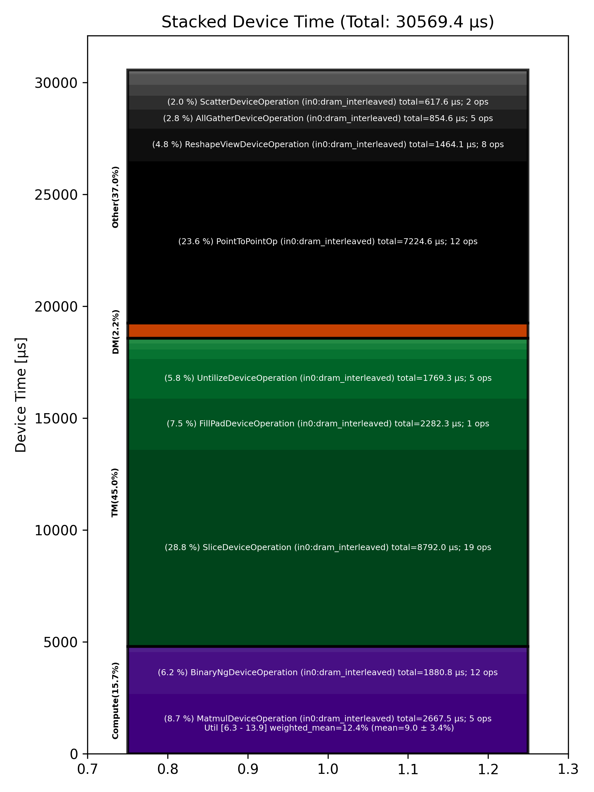

🚀 Performance Report 🚀 ======================== ID Total % Bound OP Code Device Device Time Op-to-Op Gap Cores DRAM DRAM % FLOPs FLOPs % Math Fidelity ------------------------------------------------------------------------------------------------------------------------------------------------------------------------------------ 18 0.2 % LayerNormDeviceOperation 20 112 μs 1 BF16, BF16 => BF16 34 0.1 % SLOW MatmulDeviceOperation 32 x 2880 x 640 8 45 μs 1 μs 20 46 GB/s 15.8 % 2.6 TFLOPs 6.3 % HiFi2 BF16 x BFP8 => BF16 81 0.0 % NLPCreateQKVHeadsDecodeDeviceOperation 4 6 μs 1 μs 32 BF16 => BF16 121 0.0 % ShardedToInterleavedDeviceOperation 12 2 μs 1 μs 32 BF16 => BF16 141 0.4 % RotaryEmbeddingDeviceOperation 31 13 μs 225 μs 32 BF16, BF16 => BF16 185 0.0 % SliceDeviceOperation 12 3 μs 1 μs 64 BF16 => BF16 205 0.4 % InterleavedToShardedDeviceOperation 31 1 μs 278 μs 32 BF16 => BF16 231 0.4 % PagedUpdateCacheDeviceOperation 2 5 μs 230 μs 32 BF16, BF16 => BF16 269 0.4 % PagedUpdateCacheDeviceOperation 31 5 μs 241 μs 32 BF16, BF16 => BF16 300 0.4 % ShardedToInterleavedDeviceOperation 30 1 μs 259 μs 32 BF16 => BF16 348 0.2 % RotaryEmbeddingDeviceOperation 18 13 μs 114 μs 32 BF16, BF16 => BF16 384 0.2 % SliceDeviceOperation 9 2 μs 141 μs 64 BF16 => BF16 402 0.4 % SdpaDecodeDeviceOperation 20 18 μs 207 μs 72 BF16, BF16 => BF16 425 0.2 % InterleavedToShardedDeviceOperation 0 1 μs 114 μs 32 BF16 => BF16 463 0.3 % NLPConcatHeadsDecodeDeviceOperation 6 4 μs 212 μs 8 BF16 => BF16 495 0.4 % ShardedToInterleavedDeviceOperation 6 1 μs 244 μs 8 BF16 => BF16 534 0.2 % ReshapeViewDeviceOperation 15 7 μs 107 μs 16 BF16 => BF16 548 0.9 % SLOW MatmulDeviceOperation 32 x 512 x 2880 22 15 μs 532 μs 45 114 GB/s 39.4 % 6.3 TFLOPs 6.9 % HiFi2 BF16 x BFP8 => BF16 593 0.9 % AllGatherDeviceOperation 0 80 μs 505 μs 24 BF16 => BF16 625 0.2 % FastReduceNCDeviceOperation 4 10 μs 92 μs 72 BF16 => BF16 655 0.3 % BinaryNgDeviceOperation 6 5 μs 184 μs 72 BF16, BF16 => BF16 689 0.4 % BinaryNgDeviceOperation 4 5 μs 239 μs 72 BF16, BF16 => BF16 727 0.5 % LayerNormDeviceOperation 14 112 μs 234 μs 1 BF16, BF16 => BF16 756 0.2 % SliceDeviceOperation 22 2 μs 149 μs 23 BF16 => BF16 770 0.2 % UntilizeDeviceOperation 24 15 μs 101 μs 45 BF16 => BF16 820 0.3 % SliceDeviceOperation 22 2 μs 171 μs 32 BF16 => BF16 863 0.4 % TilizeWithValPaddingDeviceOperation 10 10 μs 266 μs 1 BF16 => BF16 868 0.4 % SliceDeviceOperation 26 2 μs 253 μs 23 BF16 => BF16 926 0.5 % UntilizeDeviceOperation 11 15 μs 272 μs 45 BF16 => BF16 939 0.5 % SliceDeviceOperation 29 2 μs 323 μs 32 BF16 => BF16 989 0.1 % TilizeWithValPaddingDeviceOperation 19 10 μs 85 μs 1 BF16 => BF16 1007 0.2 % CopyDeviceOperation 6 2 μs 151 μs 23 BF16 => BF16 1037 0.5 % CopyDeviceOperation 31 2 μs 290 μs 23 BF16 => BF16 1062 0.3 % CopyDeviceOperation 3 2 μs 216 μs 23 BF16 => BF16 1099 0.1 % CopyDeviceOperation 29 2 μs 78 μs 23 BF16 => BF16 1140 0.9 % PointToPointOp 24 31 μs 524 μs 1 BF16, BF16 => BF16 1198 12.6 % PointToPointOp 19 32 μs 7,944 μs 1 BF16, BF16 => BF16 1200 0.3 % PointToPointOp 27 28 μs 148 μs 1 BF16, BF16 => BF16 1252 1.3 % PointToPointOp 10 29 μs 782 μs 1 BF16, BF16 => BF16 1302 1.1 % PointToPointOp 0 30 μs 642 μs 1 BF16, BF16 => BF16 1306 1.2 % PointToPointOp 8 28 μs 736 μs 1 BF16, BF16 => BF16 1340 19.4 % ConcatDeviceOperation 18 3 μs 12,340 μs 72 BF16, BF16 => BF16 1370 0.3 % UntilizeWithUnpaddingDeviceOperation 16 28 μs 143 μs 4 BF16 => BF16 1387 0.3 % RepeatDeviceOperation 29 58 μs 139 μs 72 BF16 => BF16 1412 0.4 % TilizeWithValPaddingDeviceOperation 26 35 μs 208 μs 64 BF16 => BF16 1467 3.5 % SLOW MatmulDeviceOperation b={16} x 128 x 736 x 5760 4 1,244 μs 971 μs 60 76 GB/s 26.4 % 14.0 TFLOPs 11.3 % HiFi2 BF16 x BFP8 => BF16 1489 0.6 % ReduceScatterDeviceOperation 0 401 μs 1 μs 40 BF16 => BF16 1521 0.6 % AllGatherDeviceOperation 0 395 μs 1 μs 40 BF16 => BF16 1553 0.5 % BinaryNgDeviceOperation 4 301 μs 1 μs 72 BF16, BF16 => BF16 1599 1.4 % UntilizeDeviceOperation 10 866 μs 1 μs 45 BF16 => BF16 1610 6.8 % SliceDeviceOperation 28 4,317 μs 1 μs 72 BF16 => BF16 1662 0.2 % TilizeDeviceOperation 11 134 μs 1 μs 64 BF16 => BF16 1667 0.2 % UnaryNgDeviceOperation 25 124 μs 1 μs 72 BF16 => BF16 1724 0.2 % BinaryNgDeviceOperation 18 120 μs 1 μs 72 BF16, BF16 => BF16 1759 1.4 % UntilizeDeviceOperation 10 868 μs 1 μs 45 BF16 => BF16 1778 6.8 % SliceDeviceOperation 20 4,318 μs 1 μs 72 BF16 => BF16 1818 0.2 % TilizeDeviceOperation 16 133 μs 1 μs 64 BF16 => BF16 1839 0.2 % UnaryNgDeviceOperation 6 124 μs 1 μs 72 BF16 => BF16 1862 0.2 % BinaryNgDeviceOperation 3 131 μs 1 μs 72 BF16, BF16 => BF16 1921 0.3 % UnaryNgDeviceOperation 8 220 μs 1 μs 72 BF16 => BF16 1924 0.3 % BinaryNgDeviceOperation 26 166 μs 1 μs 72 BF16, BF16 => BF16 1977 0.3 % BinaryNgDeviceOperation 12 166 μs 1 μs 72 BF16, BF16 => BF16 2012 2.1 % SLOW MatmulDeviceOperation b={16} x 128 x 2880 x 736 16 1,321 μs 1 μs 23 37 GB/s 12.8 % 6.6 TFLOPs 13.9 % HiFi2 BF16 x BFP8 => BF16 2030 0.1 % BinaryNgDeviceOperation 7 44 μs 1 μs 72 BF16, BF16 => BF16 2064 2.0 % ReshapeViewDeviceOperation 5 1,274 μs 1 μs 72 BF16 => BF16 2089 0.0 % TypecastDeviceOperation 0 5 μs 1 μs 72 BF16 => FP32 2126 0.1 % SLOW MatmulDeviceOperation 32 x 2880 x 128 6 43 μs 1 μs 4 18 GB/s 6.1 % 0.6 TFLOPs 6.7 % HiFi2 FP32 x BFP8 => FP32 2174 0.0 % TypecastDeviceOperation 11 3 μs 1 μs 4 FP32 => BF16 2185 0.1 % TopKDeviceOperation 0 80 μs 2 μs 1 BF16 => BF16 2217 0.0 % SliceDeviceOperation 0 1 μs 2 μs 1 BF16 => BF16 2244 0.0 % SliceDeviceOperation 26 1 μs 2 μs 1 UINT16 => UINT16 2295 0.0 % TypecastDeviceOperation 14 2 μs 2 μs 1 UINT16 => FP32 2306 0.0 % ReshapeViewDeviceOperation 24 9 μs 1 μs 32 FP32 => FP32 2368 0.0 % TypecastDeviceOperation 9 4 μs 1 μs 32 FP32 => INT32 2382 0.0 % UntilizeWithUnpaddingDeviceOperation 7 5 μs 1 μs 32 INT32 => INT32 2422 0.0 % UntilizeWithUnpaddingDeviceOperation 15 5 μs 1 μs 32 INT32 => INT32 2463 0.0 % PermuteDeviceOperation 10 4 μs 1 μs 32 INT32 => INT32 2467 0.0 % PermuteDeviceOperation 25 4 μs 1 μs 32 INT32 => INT32 2499 0.0 % ConcatDeviceOperation 25 3 μs 1 μs 64 INT32, INT32 => INT32 2547 0.0 % PermuteDeviceOperation 21 4 μs 1 μs 32 INT32 => INT32 2579 0.0 % TilizeWithValPaddingDeviceOperation 21 9 μs 1 μs 32 INT32 => INT32 2609 0.0 % SoftmaxDeviceOperation 4 25 μs 1 μs 72 BF16 => BF16 2641 0.1 % AllGatherDeviceOperation 0 83 μs 1 μs 24 INT32 => INT32 2673 0.0 % AllGatherDeviceOperation 0 11 μs 1 μs 8 BF16 => BF16 2692 0.0 % ReshapeViewDeviceOperation 26 12 μs 1 μs 16 INT32 => INT32 2742 0.0 % SliceDeviceOperation 15 3 μs 1 μs 16 INT32 => INT32 2782 0.0 % UntilizeWithUnpaddingDeviceOperation 11 15 μs 1 μs 16 INT32 => INT32 2801 0.0 % SliceDeviceOperation 4 8 μs 1 μs 72 INT32 => INT32 2845 0.0 % TilizeWithValPaddingDeviceOperation 19 9 μs 1 μs 16 INT32 => INT32 2870 0.0 % BinaryNgDeviceOperation 15 12 μs 1 μs 72 INT32, INT32 => INT32 2897 0.0 % BinaryNgDeviceOperation 4 5 μs 1 μs 72 INT32, INT32 => INT32 2944 0.0 % ReshapeViewDeviceOperation 9 7 μs 1 μs 16 INT32 => INT32 2968 0.0 % ReshapeViewDeviceOperation 13 5 μs 1 μs 16 BF16 => BF16 2982 0.0 % UntilizeWithUnpaddingDeviceOperation 3 12 μs 2 μs 1 INT32 => INT32 3013 0.0 % SliceDeviceOperation 27 1 μs 3 μs 1 INT32 => INT32 3069 0.1 % TilizeWithValPaddingDeviceOperation 19 44 μs 2 μs 1 INT32 => INT32 3082 0.0 % UntilizeWithUnpaddingDeviceOperation 28 10 μs 2 μs 1 BF16 => BF16 3129 0.0 % SliceDeviceOperation 12 1 μs 3 μs 1 BF16 => BF16 3151 0.0 % TilizeWithValPaddingDeviceOperation 6 23 μs 2 μs 1 BF16 => BF16 3191 0.0 % UntilizeWithUnpaddingDeviceOperation 14 7 μs 2 μs 1 INT32 => INT32 3203 0.0 % UntilizeWithUnpaddingDeviceOperation 25 6 μs 2 μs 1 BF16 => BF16 3256 0.5 % ScatterDeviceOperation 13 309 μs 3 μs 1 BF16, INT32 => BF16 3294 0.0 % UntilizeWithUnpaddingDeviceOperation 11 12 μs 2 μs 1 INT32 => INT32 3327 0.0 % SliceDeviceOperation 10 1 μs 3 μs 1 INT32 => INT32 3357 0.1 % TilizeWithValPaddingDeviceOperation 19 44 μs 2 μs 1 INT32 => INT32 3387 0.0 % UntilizeWithUnpaddingDeviceOperation 17 10 μs 2 μs 1 BF16 => BF16 3396 0.0 % SliceDeviceOperation 26 1 μs 3 μs 1 BF16 => BF16 3452 0.0 % TilizeWithValPaddingDeviceOperation 18 23 μs 2 μs 1 BF16 => BF16 3474 0.0 % UntilizeWithUnpaddingDeviceOperation 20 7 μs 2 μs 1 INT32 => INT32 3517 0.0 % UntilizeWithUnpaddingDeviceOperation 19 6 μs 2 μs 1 BF16 => BF16 3551 0.5 % ScatterDeviceOperation 10 309 μs 3 μs 1 BF16, INT32 => BF16 3562 0.1 % TilizeWithValPaddingDeviceOperation 28 32 μs 1 μs 64 BF16 => BF16 3596 0.0 % ReshapeViewDeviceOperation 30 25 μs 1 μs 16 BF16 => BF16 3623 0.0 % UntilizeDeviceOperation 2 5 μs 1 μs 4 BF16 => BF16 3654 0.7 % MeshPartitionDeviceOperation 14 2 μs 451 μs 72 BF16 => BF16 3703 0.3 % TilizeWithValPaddingDeviceOperation 14 4 μs 181 μs 4 BF16 => BF16 3731 0.3 % TransposeDeviceOperation 21 2 μs 161 μs 72 BF16 => BF16 3755 0.5 % ReshapeViewDeviceOperation 29 77 μs 265 μs 72 BF16 => BF16 3798 1.8 % BinaryNgDeviceOperation 15 920 μs 197 μs 72 BF16, BF16 => BF16 3816 3.6 % FillPadDeviceOperation 1 2,282 μs 1 μs 72 BF16 => BF16 3861 0.8 % FastReduceNCDeviceOperation 23 483 μs 1 μs 72 BF16 => BF16 3888 0.1 % SliceDeviceOperation 5 64 μs 1 μs 72 BF16 => BF16 3921 0.3 % ReduceScatterDeviceOperation 0 190 μs 1 μs 24 BF16 => BF16 3953 0.5 % AllGatherDeviceOperation 0 285 μs 1 μs 40 BF16 => BF16 3992 0.0 % SliceDeviceOperation 13 16 μs 1 μs 72 BF16 => BF16 4011 0.0 % SliceDeviceOperation 29 16 μs 1 μs 72 BF16 => BF16 4044 0.0 % SliceDeviceOperation 30 17 μs 1 μs 72 BF16 => BF16 4086 0.0 % SliceDeviceOperation 15 17 μs 1 μs 72 BF16 => BF16 4122 0.0 % CopyDeviceOperation 16 17 μs 1 μs 72 BF16 => BF16 4157 0.0 % CopyDeviceOperation 19 17 μs 1 μs 72 BF16 => BF16 4172 0.0 % CopyDeviceOperation 30 17 μs 1 μs 72 BF16 => BF16 4202 0.0 % CopyDeviceOperation 28 17 μs 1 μs 72 BF16 => BF16 4230 2.2 % PointToPointOp 16 1,277 μs 149 μs 1 BF16, BF16 => BF16 4232 1.1 % PointToPointOp 24 723 μs 3 μs 1 BF16, BF16 => BF16 4236 1.7 % PointToPointOp 16 1,083 μs 5 μs 1 BF16, BF16 => BF16 4314 1.7 % PointToPointOp 19 1,079 μs 5 μs 1 BF16, BF16 => BF16 4320 2.8 % PointToPointOp 23 1,799 μs 5 μs 1 BF16, BF16 => BF16 4336 1.7 % PointToPointOp 7 1,085 μs 4 μs 1 BF16, BF16 => BF16 4441 0.0 % UntilizeWithUnpaddingDeviceOperation 12 16 μs 1 μs 32 BF16 => BF16 4465 0.0 % UntilizeWithUnpaddingDeviceOperation 4 17 μs 1 μs 32 BF16 => BF16 4489 0.0 % UntilizeWithUnpaddingDeviceOperation 0 17 μs 1 μs 32 BF16 => BF16 4529 0.0 % UntilizeWithUnpaddingDeviceOperation 4 17 μs 1 μs 32 BF16 => BF16 4569 0.0 % ConcatDeviceOperation 12 4 μs 1 μs 32 BF16, BF16 => BF16 4605 0.4 % TilizeWithValPaddingDeviceOperation 19 182 μs 101 μs 45 BF16 => BF16 4617 0.1 % ReshapeViewDeviceOperation 0 55 μs 1 μs 72 BF16 => BF16 4650 0.3 % BinaryNgDeviceOperation 28 5 μs 213 μs 72 BF16, BF16 => BF16 ------------------------------------------------------------------------------------------------------------------------------------------------------------------------------------ 100.0 % 146 device ops, 0 host ops, 0 signposts 30,569 μs 32,922 μs 📊 Stacked report 📊 ==================== Total % Op Code Device Time Sum Op Count Op Category Min FLOPs Max FLOPs Mean FLOPs Std FLOPs Weighted Mean FLOPs -------------------------------------------------------------------------------------------------------------------------------------------------------------------------------- 28.76 % SliceDeviceOperation (in0:dram_interleaved) 8,792.03 μs 19 TM 23.63 % PointToPointOp (in0:dram_interleaved) 7,224.59 μs 12 Other 8.73 % MatmulDeviceOperation (in0:dram_interleaved) 2,667.47 μs 5 Compute 6.33 % 13.90 % 9.03 % 3.40 % 12.42 % 7.47 % FillPadDeviceOperation (in0:dram_interleaved) 2,282.28 μs 1 TM 6.15 % BinaryNgDeviceOperation (in0:dram_interleaved) 1,880.76 μs 12 Compute 5.79 % UntilizeDeviceOperation (in0:dram_interleaved) 1,769.34 μs 5 TM 4.79 % ReshapeViewDeviceOperation (in0:dram_interleaved) 1,464.07 μs 8 Other 2.80 % AllGatherDeviceOperation (in0:dram_interleaved) 854.62 μs 5 Other 2.02 % ScatterDeviceOperation (in0:dram_interleaved) 617.61 μs 2 Other 1.93 % ReduceScatterDeviceOperation (in0:dram_interleaved) 591.19 μs 2 DM 1.61 % FastReduceNCDeviceOperation (in0:dram_interleaved) 492.80 μs 2 Other 1.53 % UnaryNgDeviceOperation (in0:dram_interleaved) 467.76 μs 3 Other 1.39 % TilizeWithValPaddingDeviceOperation (in0:dram_interleaved) 426.06 μs 12 TM 0.87 % TilizeDeviceOperation (in0:dram_interleaved) 267.05 μs 2 TM 0.73 % LayerNormDeviceOperation (in0:dram_interleaved) 224.37 μs 2 Compute 0.61 % UntilizeWithUnpaddingDeviceOperation (in0:dram_interleaved) 186.96 μs 16 TM 0.26 % TopKDeviceOperation (in0:dram_interleaved) 79.73 μs 1 Other 0.24 % CopyDeviceOperation (in0:dram_interleaved) 74.61 μs 8 DM 0.19 % RepeatDeviceOperation (in0:dram_interleaved) 58.36 μs 1 Other 0.08 % RotaryEmbeddingDeviceOperation (in0:l1_interleaved) 25.63 μs 2 Other 0.08 % SoftmaxDeviceOperation (in0:dram_interleaved) 24.71 μs 1 Compute 0.06 % SdpaDecodeDeviceOperation (in0:dram_interleaved) 18.44 μs 1 Other 0.05 % TypecastDeviceOperation (in0:dram_interleaved) 13.88 μs 4 TM 0.04 % PermuteDeviceOperation (in0:dram_interleaved) 12.34 μs 3 TM 0.03 % ConcatDeviceOperation (in0:dram_interleaved) 10.05 μs 3 TM 0.03 % PagedUpdateCacheDeviceOperation (in0:dram_interleaved) 9.92 μs 2 DM 0.02 % ReshapeViewDeviceOperation (in0:l1_interleaved) 6.65 μs 1 Other 0.02 % NLPCreateQKVHeadsDecodeDeviceOperation (in0:dram_interleaved) 6.27 μs 1 Other 0.02 % SliceDeviceOperation (in0:l1_interleaved) 4.99 μs 2 TM 0.01 % ShardedToInterleavedDeviceOperation (in0:height_sharded) 3.75 μs 2 DM 0.01 % NLPConcatHeadsDecodeDeviceOperation (in0:height_sharded) 3.72 μs 1 TM 0.01 % InterleavedToShardedDeviceOperation (in0:dram_interleaved) 2.83 μs 2 DM 0.01 % TransposeDeviceOperation (in0:dram_interleaved) 2.13 μs 1 TM 0.01 % MeshPartitionDeviceOperation (in0:dram_interleaved) 1.56 μs 1 Other 0.00 % ShardedToInterleavedDeviceOperation (in0:width_sharded) 0.92 μs 1 DM --------------------------------------------------------------------------------------------------------------------------------------------------------------------------------
